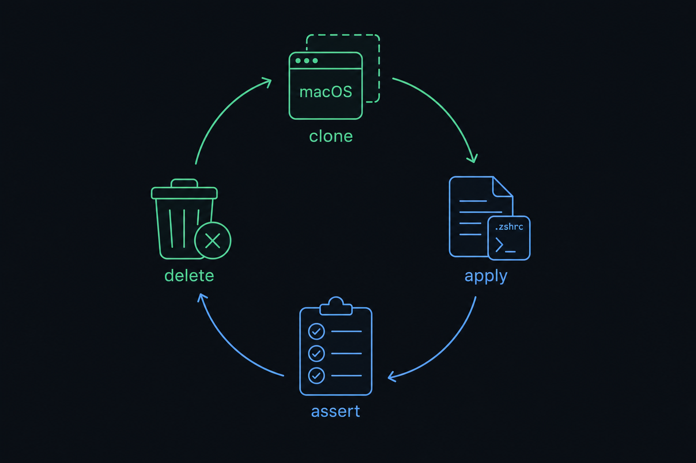
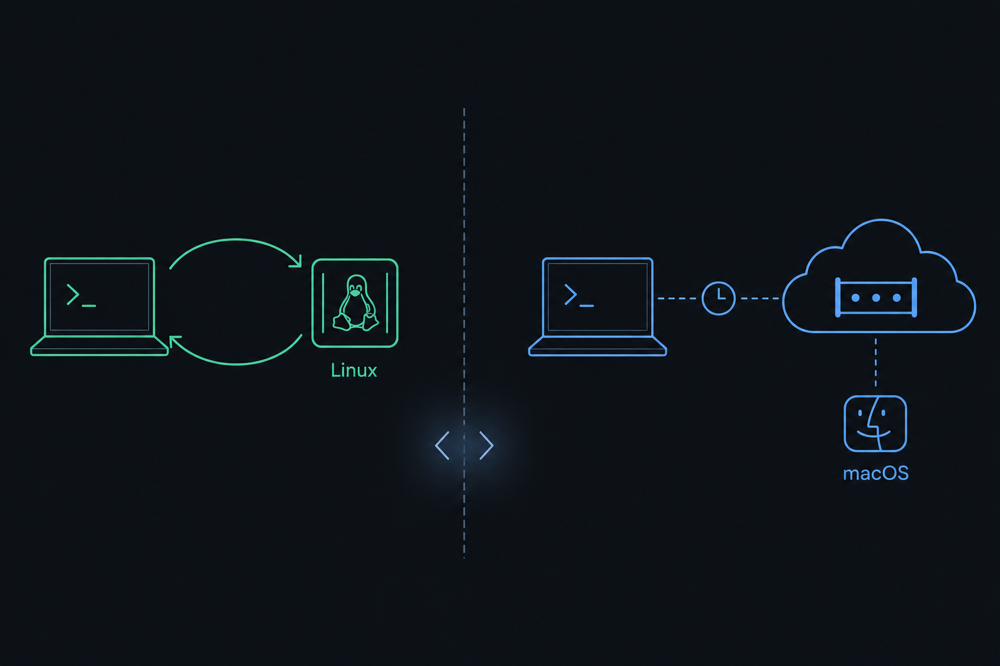
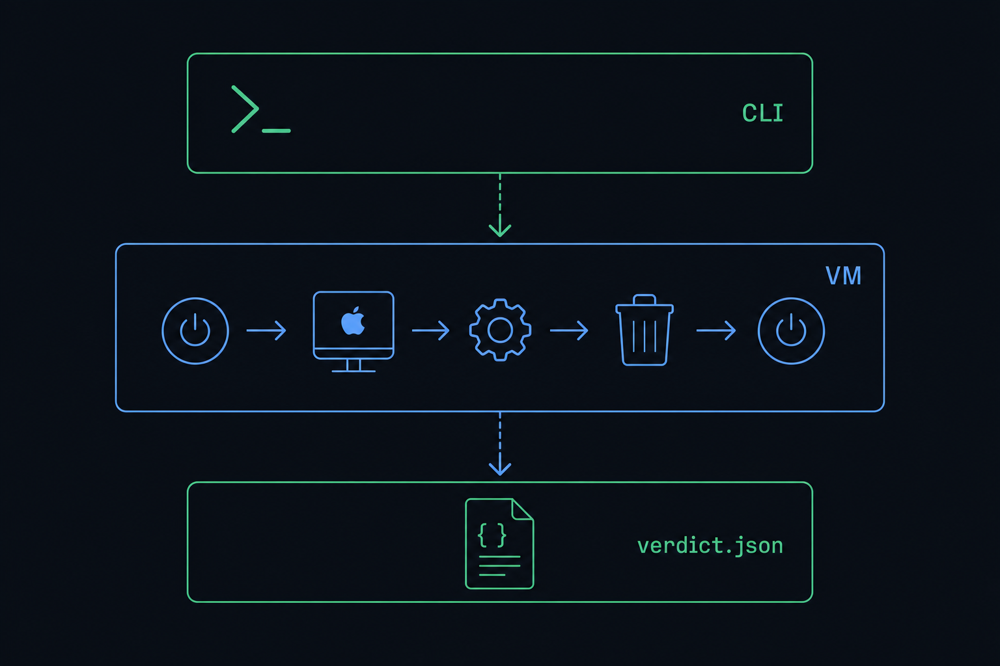
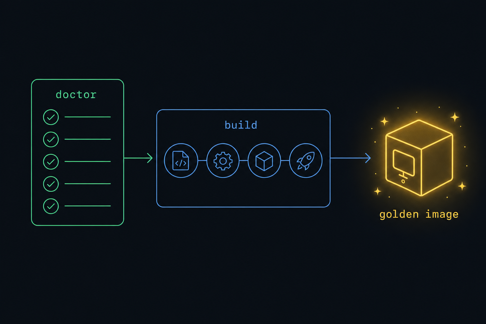
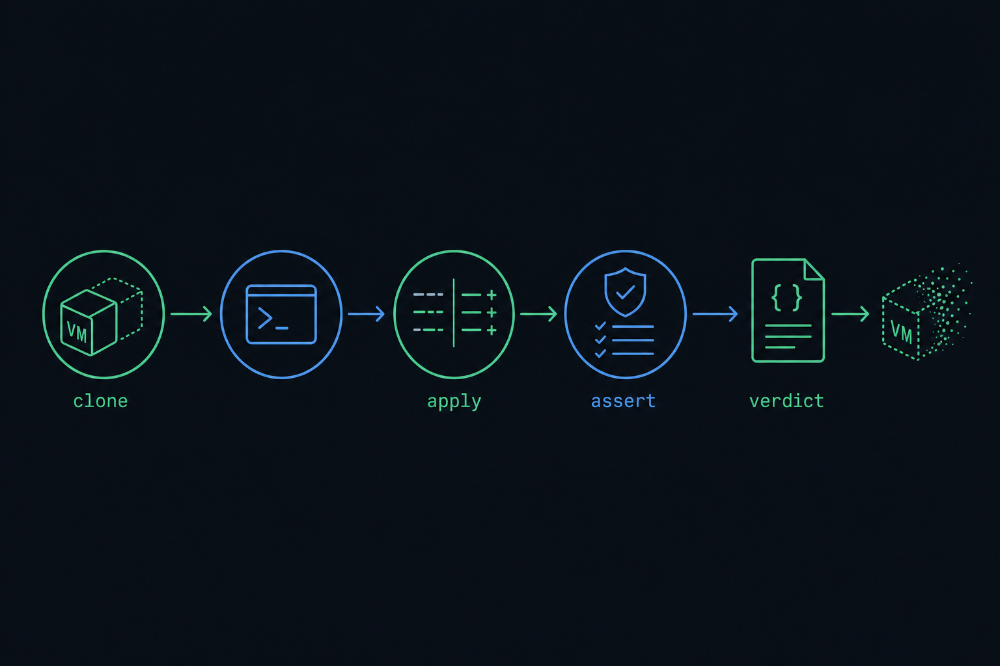
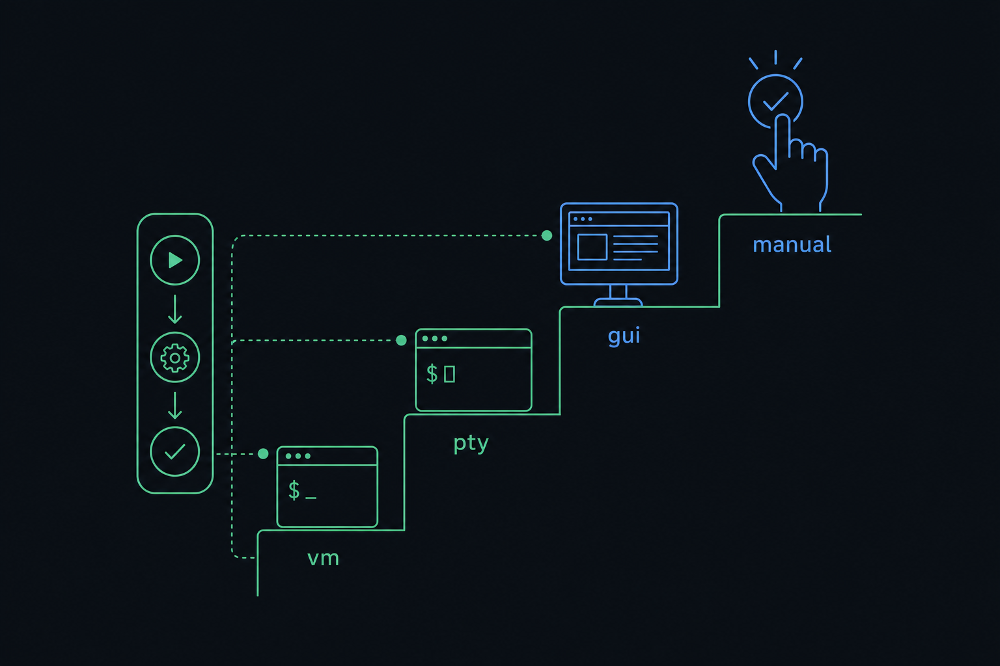
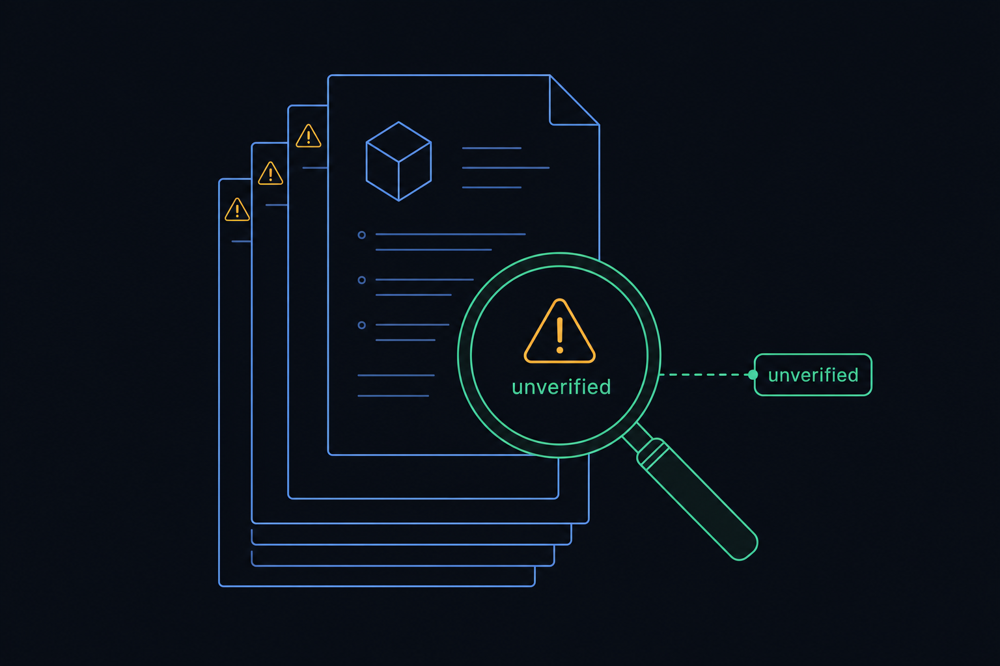
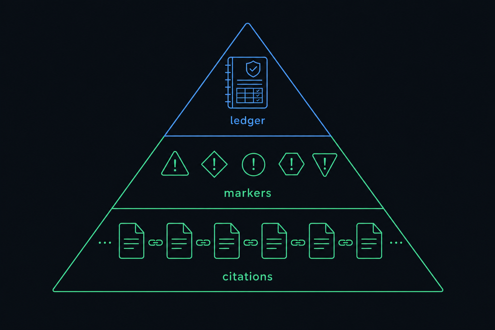

Plan: macos-ci — Tart-Based Dotfiles Test Harness
A local, scriptable, disposable-VM CI loop that installs zsh-dotfiles into a macOS guest, asserts the install, and tears it down — the macOS equivalent of the three Linux Dockerfiles.
specs/macos-ci.md + specs/macos-ci/* at commit f0b434a. The markdown specs are authoritative — on any conflict, trust them, not this page. To change the plan, change the specs and re-render.
Purpose
Build a local, scriptable, disposable-VM test harness that installs zsh-dotfiles (chezmoi) into a macOS virtual machine, asserts the install succeeded, and tears the VM down. It gives macOS the same fast local CI loop that zsh-dotfiles-prep's three Linux Dockerfiles already give Linux. Everything is driven by a Justfile fronting an installable macos-ci Python package, and every command emits machine-readable state (artifacts/latest/verdict.json) so both a human and an autonomous agent can tell exactly which phase failed. (Source: specs/macos-ci.md, specs/macos-ci/00-overview.md.)
Problem
There is no local, disposable macOS test environment for the dotfiles today. Docker cannot run a macOS guest, so the Linux images cover Linux only; the sole macOS coverage is upstream's remote, queued GitHub Actions macos-14 runner — slow feedback, no interactive debugging, no matrix control. Testing a chezmoi template change against a pristine macOS user account currently means risking your own host or waiting on CI. The research in specs/macos-ci/10-tart-vs-utm-adr.md settled the virtualization question: Tart is primary, UTM is the escape hatch — UTM has no Packer builder, no IaC story, and its guest-automation surface needs a QEMU guest agent that Apple-backend macOS guests cannot run.

Solution
A golden Tart image (ghcr.io/cirruslabs/macos-sequoia-vanilla + Xcode CLT + Homebrew + chezmoi + retry, built by packer-plugin-tart) is cloned per run. The harness drives tart clone → tart run --no-graphics → tart ip → SSH (no
. A pure/impure split (-t, so chezmoi's stdinIsATTY contract takes every prompt's default) → chezmoi diff → chezmoi apply → pytest-testinfra assertions → tart delete_*_core.py stdlib-only modules paired with thin I/O siblings) keeps the logic unit-testable without a VM; four opt-in pytest tiers (vm/pty/gui/manual) are all deselected by default; artifacts/<run-id>/verdict.json plus exit codes 0/2/3/4 make every failure attributable to a phase.

macos-ci package → tart lifecycle → verdict.json: one command in, one attributable verdict out.Relevant Files
Existing Files
- existing
justfile/Justfile— the truth-gate recipes that work today:check,link-check*,verify-claims*,unverified-count,verify-no-secrets; extend with the lifecycle recipes - existing
tools/verify_claims.py— the claims-ledger re-executor (exit 0/2/3/4); the harness's verdict/exit-code contract mirrors it - existing
.team/claims.jsonl— 357 load-bearing claims with re-executable evidence; new implementation claims land here - existing
lychee.toml— link hygiene incl.#anchorfragments; new docs must pass it - existing
tests/fixtures/packer-sensitive/fixture.pkr.hcl— the paired sensitive/control masking probe reused by task 6a - existing
tests/fixtures/verifier/— 11 fixtures exercisingverify_claims.py; the pattern for new fixture-driven unit tests - existing stale
.claude/agents/commands/skills — inherited from a Multipass project, reference a nonexistenttools/system_debug.py; rewritten in Phase 3, never extended - existing broken
justfile:build-golden— invokespacker/tart-golden-image.pkr.hclwhich does not exist; guarded to exit 4 (OQ-04 / defect D1)
New Files
- new
pyproject.toml— hatchling;[project.scripts] macos-ci = "macos_ci.cli:app"; typer, pytest, testinfra, ruff, basedpyright - new
src/macos_ci/— paired modules:_doctor_core.py/doctor.py,_tart_core.py/tart.py,_harness_core.py/harness.py,_config_core.py,_gui_core.py(incl.parse_vnc_url),_triage_core.py,cli.py - new
macos-versions.toml— single source of truth for image references: OCI lane tags + IPSW lane pinned CDN URL + sha256 per point release - new
packer/tart-golden-image.pkr.hcl— the OCI-clone lane golden image (fixes brokenbuild-golden) - new
packer/ipsw/<version>.pkr.hcl— the from-IPSW lane, one template per pinned release - new
Makefile— thin shim delegating tojustfor muscle-memory parity - new
harness/seed-config/chezmoi.yaml.tmpl— the Option A pre-seeded config that reaches the 7 non-TTY-settable feature bools - new
tests/unit/,tests/integration/,tests/pty/,tests/gui/,tests/manual/— the four opt-in tiers plus the always-on unit tier - new
.cirrus.yml—cirrus runlocal/CI parity task for a future self-hosted runner - new
artifacts/— gitignored per-run output:<run-id>/verdict.json, logs, screenshots;latestsymlink
Implementation Phases
IMPORTANT: Execute every phase and task step by step, in order, top to bottom.
Status markers: [] idle · [wip] in progress · [x] complete · [f] failed. All start as []; the Build Plan workflow updates them as it works.
[] Phase 1: Foundation
Stand up the tooling skeleton and the golden image. Write just doctor first — it is the cheapest way to discover the host is wrong. Confirm a single manual tart clone → SSH → chezmoi apply → tart delete cycle works by hand before any automation wraps it: the specs were a docs-only research pass, so the exact tart CLI syntax is assumed-until-verified (see Questionables).

1. Confirm host prerequisites
[]Verify Apple Silicon + macOS floor: tart needs macOS 13+, packer-plugin-tart needs macOS 15+ (specs/macos-ci/01,02)[]Confirm toolchain already present:tart 2.32.1,packer 1.15.4,just,uv,cirrus[]Apply the Sequoia local-network-permission workaround (requires a reboot) sotart ipworks[]Unlock/create the login keychain for headless macOS 15+ boot (constraint G8,specs/macos-ci/01)
2. Licensing sign-off (G4)
[]Readspecs/macos-ci/04-tart-licensing-risk.md; record explicit human sign-off on the Fair Source accepted-risk before provisioning any headless host[]Record the ceiling durably: ≤3 hosts, ≤100 combined CPU cores;just doctormust report the ceiling, never auto-approve it
3. Scaffold the package and write doctor (TDD, red first)
[]pyproject.toml(hatchling) with[project.scripts] macos-ci = "macos_ci.cli:app"[]Failing unit tests first:_gui_core.parse_vnc_url,_config_core.load,_tart_core.clone_argv,_doctor_core.check[]Implementdoctor.py: host arch/OS, tool presence, free disk, keychain state, license-ceiling report;--jsonoutput
4. Write the Justfile recipes and the Makefile shim
[]Implement the full recipe table fromspecs/macos-ci/12(doctor up down run apply ssh logs debug status gui vnc shot test verify-* matrix lint fmt typecheck ci prune), preserving the existing truth-gate recipes[]AddBash(just:*)to.claude/settings.jsonallow-list
5. Author macos-versions.toml and the two image lanes
[]macos-versions.toml: OCI tags + IPSW pinned URL/sha256 per point release[]packer/tart-golden-image.pkr.hcl— OCI clone lane from…-vanilla(not-base: it preinstalls mise and would disarm the test, OQ-18)[]packer/ipsw/<version>.pkr.hcl— IPSW lane, expected fragileboot_command
6. Build and smoke-test the golden image
[]just build-golden(this un-breaks the currently guarded recipe / closes OQ-04)[]Manual smoke:tart clone dotfiles-golden smoke-check→ SSH →chezmoi --version && brew doctor→tart delete smoke-check
6a. Inject the Homebrew token without letting it reach the artifact
[]PassHOMEBREW_GITHUB_API_TOKENonly via shell-provisionerenvironment_varswithuse_env_var_file = false— never write it to the guest FS (rmunlinks, it does not zero blocks;specs/macos-ci/13)[]Rewrite the onegit@github.com:tap to anonymous HTTPS viaGIT_CONFIG_COUNT/KEY_n/VALUE_n; no SSH key, no~/.gitconfigin the image[]just verify-no-secrets <vm>— and prove the probe works with a planted-canary positive control (a negative probe alone is satisfied by an empty disk)
7. Testing Strategy
Unit tier (pure _core modules, no VM) via pytest; lint/format/type gates; Packer template validation; then the one manual end-to-end cycle that proves the docs-only research against reality.
[]uv run pytest— unit tier passes with no VM booted[]uv run ruff check . && uv run ruff format --check .— style gate clean[]uv run basedpyright src/— type gate clean[]just doctor --json | jq '.[] | select(.ok == false)'— empty output on a healthy host[]packer init packer/tart-golden-image.pkr.hcl && packer validate packer/tart-golden-image.pkr.hcl— template parses[]just build-golden— exits 0, image exists intart list[]just verify-no-secrets smoke-check— exit 0 clean; planted canary flips it to exit 2
[] Phase 2: Core Implementation
Script the full cycle behind just run, port the assertion vocabulary from smoke-test-docker.sh into pytest-testinfra modules, implement the pre-seeded-config lever, and land the artifacts/<run-id>/ contract including verdict.json.

just run owns the whole cycle and always emits a verdict, pass or fail.1. Implement the harness (up/run/destroy)
[]_harness_core.py(pure): run-id generation, artifact paths,chezmoi_argv()[]harness.py(impure): clone → run--no-graphics→tart ip→--dirmount → SSH without-t(sostdinIsATTYdefaults every prompt, G11) →chezmoi diff(neververify) →chezmoi apply[]Per-VM identity viaCM_computer_name/CM_hostnameenv vars; flaky network ops wrapped inretry -t 4[]version_managerselector:misedefault (the only manager zsh-dotfiles bootstraps unaided on macOS),asdfopt-in behind--with-prereq-installer
2. Implement the pre-seeded-config lever (Option A)
[]Renderharness/seed-config/chezmoi.yaml.tmpl→ write~/.config/chezmoi/chezmoi.yamlin the guest beforechezmoi init[]This is the only path to the 7 feature bools (ruby pyenv nodejs k8s cuda fnm opencv) — they are unreachable non-TTY (specs/macos-ci/08§(b),09)
3. Port the assertion layer (the vm tier)
[]tests/integration/testinfra modules reusing thesmoke-test-docker.shassertion vocabulary; session-scoped host fixture inconftest.py[]mise assertions + run the in-guesthack/doctor/check_dev_environment.py[]sheldon lockas the one mutating assertion (no read-only alternative in 0.6.6, OQ-17 — acceptable only because the clone is disposable)
4. Implement teardown and the artifacts contract
[]Alwaystart delete <run-id>on completion;--keep-on-failureescape hatch;just prunefor strays[]artifacts/<run-id>/verdict.json(ok,phase,cause) + logs;artifacts/latestsymlink; exit codes 0/2/3/4 matchingverify_claims.py
5. Testing Strategy
The real thing: a full just run against the actual zsh-dotfiles checkout, verdict inspection with jq, and leak-checking the VM inventory afterwards.
[]ZSH_DOTFILES=/Users/bossjones/dev/bossjones/zsh-dotfiles just run— full cycle exits 0[]jq '.ok, .phase, .cause' artifacts/latest/verdict.json—true, final phase,null[]uv run pytest -m vm— integration tier green against a live clone[]tart list— no leaked run VMs after completion[]just prune— removes deliberately stranded clones
[] Phase 3: Integration & Polish
Add the pty/gui/manual tiers, rewrite the stale .claude/ agent tooling for macOS, wrap the harness in a .cirrus.yml task for cirrus run parity, and validate the whole feedback loop by breaking it on purpose.

1. Add the pty, gui, and manual tiers
[]pty: pexpect overssh -ttto exercise the interactive prompt path the headless lane deliberately skips[]gui: VNC framebuffer viaasyncvncagainsttart run --vnc-experimental;parse_vnc_urlconfirmed against real stdout (its regex was composed from one reported example — see Questionables);vncdotoolas fallback; screenshots intoartifacts/<run-id>/screenshots/[]manual:confirm()fixture thatpytest.skip()s when stdin is not a TTY
2. Implement vm-debug and rewrite the .claude/ tooling
[]_triage_core.pyfailure-signature table (the macOS analogue of the Multipass journal signatures)[]Rewrite — not extend — the stale Multipass/journalctl agents, commands, and skills; they reference a nonexistenttools/system_debug.py[]Add/vm-status
3. Wrap in a Cirrus CLI task
[]Author.cirrus.ymlreproducingjust runsocirrus rungives local/CI parity for a future self-hosted runner
4. Dry-run the full matrix and validate the feedback loop
[]just matrixacross{sequoia} × {mise, asdf}[]Break a chezmoi template on purpose; confirmverdict.jsonnames thechezmoi-diffphase and the correct cause
5. Testing Strategy
Exercise every tier plus both front doors (just and make) plus the CI wrapper; finish with the deliberate-breakage drill that proves failures are attributable, which is the point of the whole harness.
[]just verify-pty— interactive prompt path green[]just verify-gui && ls artifacts/latest/screenshots/— framebuffer reachable, screenshots written[]just verify-manual— skips cleanly non-TTY, prompts on a TTY[]make doctor && make test— Makefile shim delegates correctly[]cirrus run --artifacts-dir artifacts— CI-parity task passes locally[]just matrix— both version-manager lanes produce verdicts[]Deliberate breakage →jq '.phase' artifacts/latest/verdict.jsonprints"chezmoi-diff"
Validation Commands
Execute these commands to validate the entire plan is complete (from specs/macos-ci.md §Validation plus the repo's existing truth gate):
[]uv run pytest— unit tier green, zero VMs booted[]uv run ruff check . && uv run ruff format --check . && uv run basedpyright src/— style + types[]uv run python -c "import macos_ci._tart_core, macos_ci._doctor_core, macos_ci._gui_core"— pure cores import stdlib-only[]just doctor— healthy host, license ceiling reported[]just build-golden— golden image builds;just verify-no-secretsclean with working canary control[]ZSH_DOTFILES=… just run && jq '.ok' artifacts/latest/verdict.json—true[]just verify-pty && just verify-gui && just verify-manual— all tiers[]make doctor && make test— shim parity[]cirrus run --artifacts-dir artifacts— CI parity[]tart list— no stray VMs[]just check— the existing truth gate (link-check + verify-claims + unverified-count) still passes with all new docs/claims
Questionables
QUESTIONABLE=true: these are the places where the specs are assumed, unverified, contradictory, or thinner than they read. Each entry says what was questioned and what the plan does about it.

The entire spec set is a docs-only research pass — no VM was ever booted
The biggest caveat ships inside the plan itself (specs/macos-ci.md §Notes): no VM was booted, no brew install run, no host mutated during research. The tart CLI syntax, headless flags, VNC stdout format, and the Packer template are composed examples, not source-quoted facts. Mitigation: Phase 1 task 6's manual clone→SSH→delete cycle exists precisely to convert these assumptions into evidence before automation wraps them. The dotfiles findings (prep boundary, mise/asdf split, prompt contract) are the exception — read directly from source.
OQ-04: build-golden invokes a Packer template that does not exist
Nothing in the image build path has ever executed end-to-end. justfile:build-golden guards on the absent packer/tart-golden-image.pkr.hcl and exits 4 (defect D1). Marked NEEDS-HUMAN in the open-questions ledger. This plan resolves it in Phase 1 task 5 — but until then, every claim about the golden image is design, not fact.
Exact tart CLI syntax in spec 08 is UNVERIFIED — clone, headless flag, --dir mount
specs/macos-ci/08:99,134,141 carry <!-- UNVERIFIED --> markers on the exact tart clone invocation, the headless-run flag, and the --dir mount syntax. Cross-check against specs/macos-ci/01's CLI reference and against tart 2.32.1 --help on the real host before implementing _tart_core.clone_argv. Related: OQ-15 — whether tart run --graphics even parses on 2.32.1 is BLOCKED-BY-SCOPE because settling it requires invoking tart run.
The gui tier stands on an experimental flag and a single reported example
tart run --vnc-experimental is experimental by name, and parse_vnc_url's regex was composed from one reported stdout example (specs/macos-ci/12:364, UNVERIFIED). If the format differs or the flag changes, the whole gui tier fails at its first line. Mitigation: the regex is confirmed against real output in Phase 1 (unit test) and Phase 3 (live); vncdotool is the designated fallback client. The gui tier is deliberately last and opt-in.
Secret masking has only ever been probed via packer inspect — which never runs a provisioner
OQ-23 (also numbered OQ-08 in spec 13): every masking claim in the ledger probes packer inspect, but the leak surface that matters is the real packer build provisioner path, which is untested. Relatedly OQ-14: the cli-help evidence kind's env overlay can set but not unset a variable, so an operator with PACKER_LOG=1 exported silently promotes every no-env claim to a debug-log run. Mitigation: Phase 1 task 6a validates masking on a real build, with a planted-canary positive control — a negative probe alone is satisfied by empty output.
The unlink-doesn't-erase reproduction was host-side, not in-VM — and asif is unstudied
specs/macos-ci/13:51,54: the demonstration that rm leaves plaintext recoverable by strings was performed on a host UDIF/APFS image via hdiutil, not inside a tart VM's actual disk image. And OQ-01 (BLOCKED-BY-SCOPE): whether macOS 26's sparse disk_format = "asif" changes the residue model is unknown — narrower than it reads (only the IPSW/ISO lanes ever set it) but not closed. The policy conclusion (never write secrets to the guest FS) is safe regardless, because it removes the question rather than answering it.
Who enforces Fair Source after the OpenAI acquisition?
specs/macos-ci/04:186 (UNVERIFIED): Cirrus Labs was acquired by OpenAI (announced 2026-04-07); tier numbers are unchanged and the repo moved to openai/tart (license FSL-1.1-ALv2), but whether licensing@cirruslabs.org is still the right contact — or who now enforces — is unverified. The Oct-2025 enforcement precedent predates the acquisition. Mitigation: the G4 sign-off in Phase 1 task 2 is a human gate, and the ≤3 hosts / ≤100 cores ceiling is comfortably inside the free tier either way.
The host floor is split and stricter than it first reads
Tart's floor is macOS 13, but packer-plugin-tart requires macOS 15+ (specs/macos-ci/02:35-52) — so the build host and a mere run host have different requirements. macOS 15+ then adds its own tax: the G8 login-keychain unlock for headless boot and the Sequoia local-network-permission workaround that requires a reboot. A contributor on macOS 14 can run clones but never build images. just doctor must distinguish these two floors explicitly.
The IPSW lane is fragile by design
Point releases are pinned by hand-copied CDN URL + sha256 from MrMacintosh's firmware database — Apple publishes no stable version→URL resolver. The reference boot_command is admittedly brittle (the markkenny reference implementation's typo'd <wai7s> token is cited in the specs as a cautionary tale). Position: the OCI clone lane is the primary; the IPSW lane is for versions ghcr.io doesn't carry, and every use of it should expect maintenance.
OQ-13: may just check take a network dependency at all?
NEEDS-HUMAN: settling the use_env_var_file safety property properly means fetching Packer source at a pinned tag inside the truth gate — which would make just check network-dependent and thus flaky offline. Related OQ-26: should verify_claims.py gain http-status/http-contains evidence kinds with a host allowlist? Not resolved by this plan — flagged for the human; the default remains a network-free just check.
One assertion mutates the guest: sheldon lock
OQ-17 (answered): sheldon 0.6.6 has no read-only verify, so the plugin-manager assertion must run sheldon lock, which writes a lockfile. Acceptable only because it runs inside a disposable clone that is deleted after the run — but it means the assertion suite is not idempotent-by-construction, and anyone reusing it against a persistent VM inherits that footgun. Documented in the testinfra module.
The honesty budget itself is gameable
OQ-05 (OPEN): unverified-count greps for <!-- UNVERIFIED --> marker lines — wrapping or rephrasing a marker games the count. OQ-06 (OPEN): the recipe prints marker lines, not an actual count, so "the budget should fall" is measured by eyeball. Neither breaks the plan, but both mean the verification layer's own meta-metric is softer than the claims ledger it sits beside.
No self-hosted runner exists — .cirrus.yml targets a future machine
Today the only macOS CI is upstream's queued GitHub macos-14 runner. The Phase 3 .cirrus.yml buys local/CI parity (cirrus run reproduces just run), not CI itself; Orchard scale-out is explicitly deferred. The plan's value holds without a runner — it is a local harness first — but "CI" in the repo name is aspirational until a runner exists.
Golden-image sizing is a sketch, not a decision
The spec-02 example says cpu_count=4, memory_gb=8, disk_size_gb=60, but no measurement backs those numbers, and Tart auto-prunes LRU cached images when host disk runs low — a surprise deletion mid-matrix would look like corruption. just doctor's free-disk check (Phase 1 task 3) should assert headroom for at least golden + 2 clones before any matrix run.
The stale .claude/ tooling actively lies about this repo
The inherited agents/commands/skills (log-researcher, system-debug, triage-*) are Multipass/journalctl tooling referencing a tools/system_debug.py that does not exist here. Until the Phase 3 rewrite, an agent following them will confidently SSH to VMs that aren't there. They are scheduled for rewrite, not extension — flagged here because they are a live hazard during Phases 1–2, not just debt.
Notes
Settled facts — do not re-litigate
These were expensive to establish and keep getting re-derived. Each is settled in the named spec:
- Tart is primary, UTM is the escape hatch — the ADR (
10). No Terraform provider exists for either;packer-plugin-tartis tart-only; UTM's disposable mode and guest-exec are QEMU-backend-only, which never applies to a macOS guest;utmctlis an AppleScript wrapper, not a second surface — a flag in--helpproves it parses, not that it works (05§4). - The golden image is built from
-vanilla, never-base(08§(a), OQ-18) —-basepreinstalls mise, silently disarming the very test the suite exists to run. The image carries Xcode CLT, Homebrew, chezmoi ≥ 2.20.0,retry— and notzsh-dotfiles-prep. - mise is the default
version_manager(09) — the only one zsh-dotfiles bootstraps unaided on macOS; asdf is opt-in via the prep installer. - Non-interactive chezmoi is solved upstream via
stdinIsATTY(G11,09) — SSH without-tdefaults every prompt; no upstream change needed. Pre-apply validation ischezmoi diff, neverchezmoi verify. - No Ansible (
08§(e)) — neither dotfiles repo is provisioned by it. - Secrets never touch the guest filesystem (
13) — provisionerenvironment_varswithuse_env_var_file = false; deleting a file does not erase it. Packer'ssensitive = truemasks values globally by substring — never mark a common word likeadminsensitive. The build needs no SSH key, no~/.gitconfig, noHOMEBREW_GITHUB_PACKAGES_TOKEN; the token is a rate-limit optimisation (60→5000 req/hr), not a dependency. - Fair Source, accepted risk (
04, G4) — free below 100 combined cores / headless "server installations"; enforced since Oct-2025; fleet target ≤2–3 hosts.
Built vs designed (from spec 12's status table)
| Layer | Status | Evidence |
|---|---|---|
Truth gate: just check = link-check + verify-claims + unverified-count | ✅ built, passing | justfile, tools/verify_claims.py (exit 0/2/3/4), 357-claim .team/claims.jsonl |
| Verifier test fixtures | ✅ built | tests/fixtures/verifier/ (11 fixtures), tests/fixtures/packer-sensitive/ |
build-golden recipe | ⚠️ built but broken | guards on absent packer/ template, exits 4 (OQ-04) |
macos_ci package, lifecycle recipes, test tiers, Packer templates, .cirrus.yml | 📐 designed only | this plan's Phases 1–3 |
.claude/ agent tooling | ❌ stale (wrong project) | Phase 3 rewrite |
Contracts the implementation must honor
- Exit codes:
0verified/ok ·2a claim/phase failed ·3evidence/host unreachable ·4usage — shared byverify_claims.pyand the harness. - Pure/impure split: every
_*_core.pyis stdlib-only and unit-testable without a VM; its sibling owns all I/O. - Three-layer verification (
00): inline citations →<!-- UNVERIFIED -->markers → the claims ledger. New implementation claims must land as ledger entries; a claim that can't be a ledger entry gets the marker. Negative probes always pair with a positive control. - Doc verification: query the doc sites' own search JSON indexes (UTM, tart) or the HashiCorp sitemap — never guess a URL;
/packer/integrations/**pages are the exception (verify by HTTP status or the plugin repo's.web-docs/). - Reading order for onboarding:
00 → 10 → 01 → 02 → 13 → 08 → 09 → 12 → 03 → 04 → 05 → 06 → 07 → 11.
Dependencies
New Python deps (via uv add): typer, pytest, pytest-testinfra, pexpect, asyncvnc (fallback vncdotool), dev-tier ruff + basedpyright. Host tools already present: tart 2.32.1, packer 1.15.4, just, uv, cirrus. Guest-side: golden image provides chezmoi ≥ 2.20.0, Homebrew, Xcode CLT, retry.

Amendments
No amendments yet — this section is populated by the Update Plan / Update References workflows after the plan is first executed. Append-only.